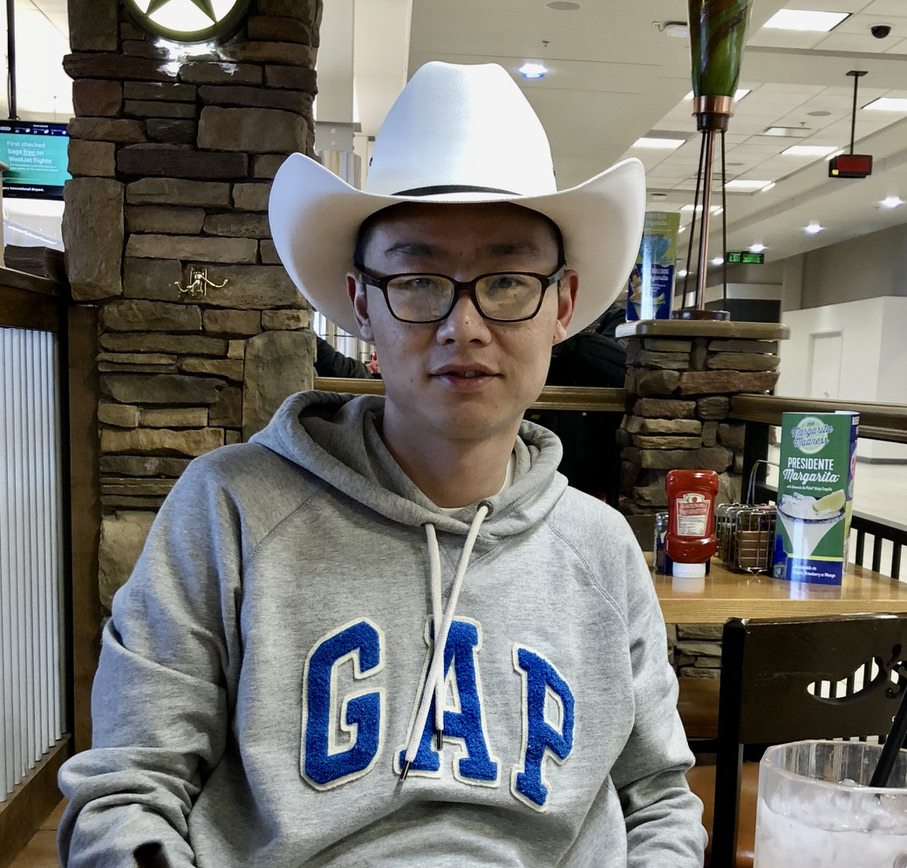

|  | 田品卓 |
本人于2021年9月博士毕业于南京大学软件新技术国家重点实验室，2021年11月进入上海大学。从事于机器学习、人工智能等方面研究。目前主要围绕如何构建开放场景下的视觉感知及决策方法进行研究，相关应用场景包括图像识别、语义分割等经典计算机视觉任务、基于不同人称视角下的视觉感知及智能系统决策、AI for Science等。在AAAI、IJCAI，TPAMI、TCYB、TNNLS、TMM等机器学习、人工智能、计算机视觉领域的著名学术会议和期刊上发表文章十余篇，并担任NeurIPS、ICLR、CVPR、ICCV、AAAI、TNNLS、ML等国际会议期刊审稿人。相关研究工作受到国家自然科学基金、上海市扬帆等项目支持，曾获得南京市人工智能产业人才“兴智计划”资助，南京大学优秀毕业生，AAAI20学生旅行奖，CGCKD2022优秀学生论文，并在IJCAI-YES、ACCV上进行学术报告。
I received my Ph.D. degree from the State Key Laboratory for Novel Software Technology at Nanjing University in 2021. I'm interested in machine learning, representation learning and so on. Recently, I focus on developing innovative methods for representation and decision-making in open environments.
请各位同学确定保研或考研录取资格以后，再邮件联系我。另外由于指导名额有限，请各位同学尽量提前半年以上联系，因时间有限并不会回复每一位同学，谢谢
招收25年保研学生。题组优势：紧跟最新前沿技术，会和学生进行良性互动，经常讨论和指导，有机器学习方面的实战项目以提升动手实践能力
[2024] TCYB *1 (人工智能领域顶级期刊，影响因子9.4，1区top)
[2023] TPAMI *1 (计算机视觉领域顶级期刊，影响因子：20.8，1区top), AAAI23 *1 (CCF A类会议), KBS *1（影响因子：7.2，1区top), Neurocomputing *1 (2区), ACCV tutorial *1 （联合南京大学计算机科学与技术系 李文斌教授和人工智能学院 叶翰嘉教授), 上海大学本科生学术论坛 三等奖
[2022] TMM *1 (多媒体领域顶级期刊，影响因子：8.4，1区top), CGKD2022优秀学生论文奖（掼蛋AI）*1, PRICAI *1
[2018-2021] AAAI 20 *1 (CCF A类会议)，IJCAI20 *1 (CCF A类会议), TNNLS (人工智能领域顶级期刊，影响因子10.2，1区top), FCS (2区), ICASSP18 (CCF-B类会议)
Zhenxing Ge, Shangdong Yang, Pinzhuo Tian, Zixuan Chen, Yang Gao, Modeling Rationality: Towards Better Performance Against Unknown Agents in Sequential Games, IEEE Transactions on Cybernetics (TCYB), 2024
Linjian Meng, Zhenxing Ge, Pinzhuo Tian, Bo An, Yang Gao, Deep FTRL-ORW: An Efficient Deep Reinforcement Learning Algorithm for Solving Imperfect Information Extensive-Form Games, AAAI-23
Pinzhuo Tian, Hang Yu, Can we improve meta-learning model in few-shot learning by aligning data distributions. Knowledge-Based Systems (KBS), 2023
Wenbin Li, Ziyi Wang, Xuesong Yang, Chuanqi Dong, Pinzhuo Tian, Tiexin Qin, Jing Huo, Yinghuan Shi, Lei Wang, Yang Gao, Jiebo Luo, LibFewShot: A Comprehensive Library for Few-Shot Learning, IEEE Transactions on Pattern Analysis and Machine Intelligence (TPAMI), 2023
Pinzhuo Tian, Shaorong Xie, An Adversarial Meta-training Framework for Cross-domain Few-Shot Learning , IEEE Transactions on Multimedia (TMM), 2022
Zhenxing Ge, Shuai Xiang, Pinzhuo Tian, Yang Gao, 基于深度强化学习的惯蛋扑克博弈求解, CGCKD2022, 优秀学生论文奖
Chao Li, Yujing Hu, Pinzhuo Tian, Shaokang Dong, and Yang Gao, DDMA: Discrepancy-Driven Multi-Agent Reinforcement Learning, PRICAI 22
Pinzhuo Tian, Wenbin Li, YangGao, Consistent Meta Regularization for Better Meta-knowledge in Few-shot Learning, IEEE Transactions on Neural Networks and Learning Systems (TNNLS), 2021
Pinzhuo Tian, YangGao, Improving Meta-Learning Model via Meta-contrastive Loss, Frontiers of Computer Science (FCS), 2021
Pinzhuo Tian, Lei Qi, Shaokang Dong, Yinghua She, YangGao, Consistent MetaReg: Alleviating Intra-task Discrepancy for Better Meta-knowledge, IJCAI 20
Pinzhuo Tian, Zhangkai Wu, Lei Qi, Lei Wang, Yinghuan Shi, Yang Gao, Differentiable Meta-Learning Model for Few-Shot Semantic Segmentation , AAAI20
Pinzhuo Tian, Lei Qi, Yinghuan Shi, Luping Zhou, Yang Gao, Dinggang Shen, A Novel Image-Specific Transfer Approach for Prostate Segmentation in MR Images, ICASSP 18
Room 415, Computer Science Building, Baoshan Campus, Shanghai University